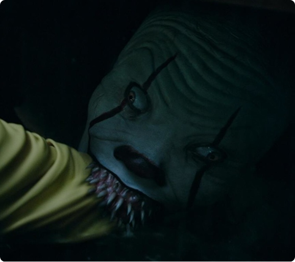
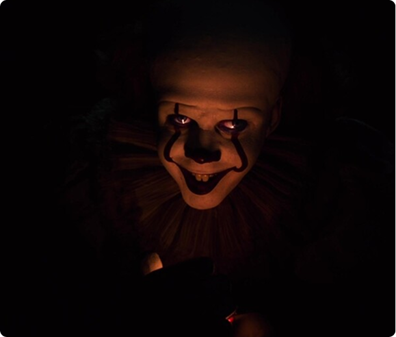

Игра актёра: вот где настоящий ужас!


Пеннивайз в исполнении Билла Скарсгарда — это не просто типичный монстр, каких мы привыкли видеть. Он играет с нашими страхами. Его лицо, голос, всё в нём — что-то неправильное. Он будто сломанный, и от этого становится жутко. Мозг просто не понимает, чего от него ждать, и включает тревогу как защитный механизм.
Клоун — это зеркало наших страхов

Дело в том, что клоун из «Оно» — это не просто монстр, это то, чего боишься именно ты. Для кого‑то — чудовище из шкафа, для кого‑то — тень под кроватью. Он берёт твои страхи и принимает их форму — поэтому он так страшен всем. Он стал универсальным символом страха.
Раньше клоун ассоциировался с праздником, смехом, весельем. «Оно» перевернуло всё с ног на голову. Яркие краски, шарики, грим — всё это теперь не радует, а пугает. Этот контраст бьёт по нервам сильнее, чем обычные монстры. Пугает не уродство, а то, что хорошее стало плохим. Психологи утверждают: это один из самых мощных приёмов в хорроре.

Клоун повсюду
После успеха фильма 2017 года Пеннивайз стал абсолютной суперзвездой. Его рисуют, косплеят, вставляют в мемы и другие страшилки. Клоун больше не просто персонаж — он сам по себе символ хоррора, такой же узнаваемый, как маньяк в маске или призрак.
Вывод

Клоун стал культовым после «Оно» потому, что всё сошлось: отличная игра актёра, яркий образ, глубокий смысл и любовь зрителей. Конечно, страшные клоуны были и раньше, но именно этот закрепил за собой место главного кошмара в современном хорроре.